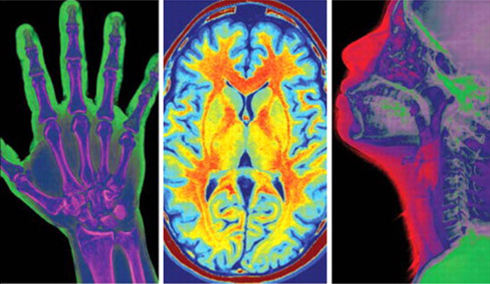
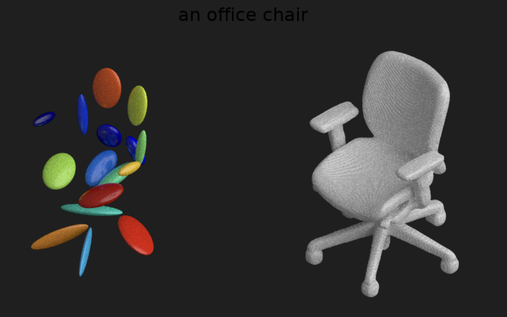
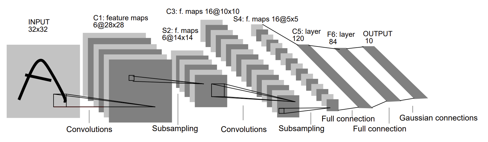
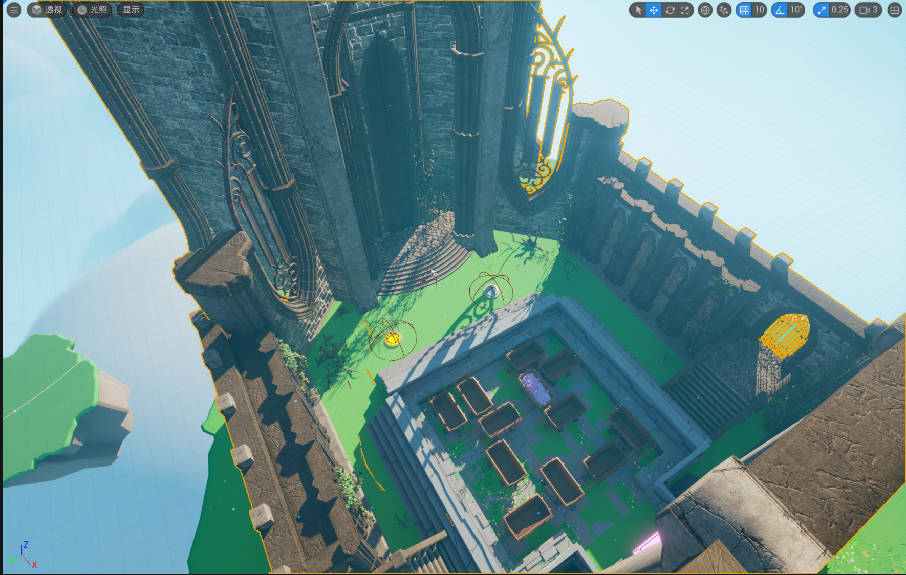

|
Yuxuan Lin yuxuan42@illinois.edu | +86 19533230071
Hi! I am a senior undergraduate at ZJU-UIUC Institute, (dual degree from both Zhejiang University and University of Illinois Urbana-Champaign).
|

Research ExperiencesI'm interested in Deep Learning based system developmet. |
|  |
Flow-based Deep Generative Model for PET Image Reconstruction - Senior Thesis
Adviser: Bo Zhao
Dec. 2024 - Jun. 2025(expected)
|
|  |
Generative AI Based 3D Models Generation
Adviser: Liuqing Chen (ZJU D3 Lab)
Jun. 2024 - Nov. 2024
|

|
GPU-Accelerated Computation for Electromagnetic Scattering of a Vegetation Model
Adviser: Shurun Tan
Jun. 2023 - Jul. 2023
|

|
The Multi-emotionality Improvement of Text-to-Speech
Adviser: Gaoang Wang
May. 2022 - May. 2023
|
Professional ExperiencesI had fun doing internships in software development for AIoT systems. |
|
Software Development Intern
IoT Product Group 5, Ezviz
Jul. 2024 - Sep. 2024
|
|
|
Teaching Assistant - Math213 Discrete Mathematics
Supervisor: Meng Zhang
Sep. 2024 - Jan. 2025
|
Selected Projects
I am familiar with C/C++ and Linux. |
|
The Fitness Coach: A Deep Learning Based Fitness APP - UIUC Senior Design Project
Supervisor: Bruce Xinbo Yu
Jan. 2025 - Jun. 2025
|
|  |
GPU Convolution Kernel Optimizations
Supervisor: Volodymyr Kindratenko
Sep. 2024 - Dec. 2024
|

|
LOS - A Light Linux-Like Operating System
Supervisor: Kirill Levchenko, Dong Kai Wang
Mar. 2024 - May 2024
|

|
A Video Recommendation Web App Based on the YouTube Trending Video Dataset
Supervisor: Abdussalam Alawini
Nov. 2023
|
|  |
Infinity Revelation: Demo of an Adventure Puzzle-Solving Game
Supervisor: Eric Shaffer
Mar. 2024 - Apr. 2024
|

|
Fruit-Man: A Maze Game Demo
Supervisor: Kirill Levchenko, Dong Kai Wang
Feb. 2024 - Mar. 2024
|
Relevant courses: |
|
Source code from Jon Barron. |